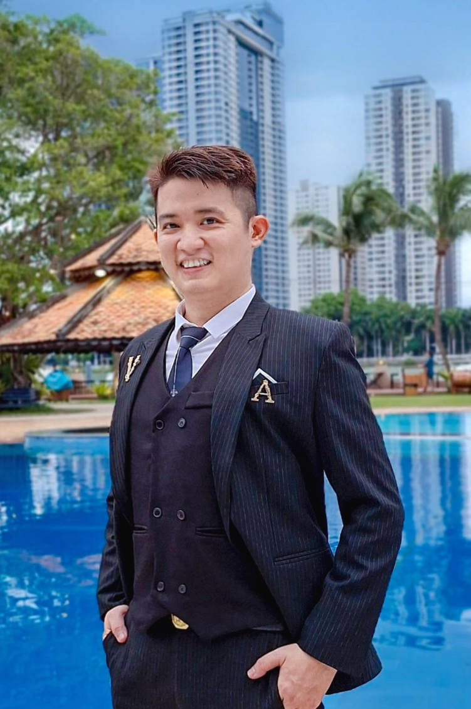

01
🌱 About
02
🧰 Toolkit
03
💼 Experience
04
🏢 Selected projects
05
🔬 Research and papers
Curious about the boundary between polished product work and robust engineering.
I keep learning through hands-on projects, technical experimentation, and the continuous practice of making software easier to use and maintain.
06
🎓 Education and journey
07
🏅 Achievements and honours
08
✨ Built for people and browsers
1small page controller
0third-party UI libraries
100%responsive layout
HTMLsemantic-first structure
The page uses one deferred controller, one responsive stylesheet, native image dimensions, reduced-motion support, and off-screen rendering containment to keep the experience lightweight.
09
🏅 Courses and certifications
Have an AI project in mind?